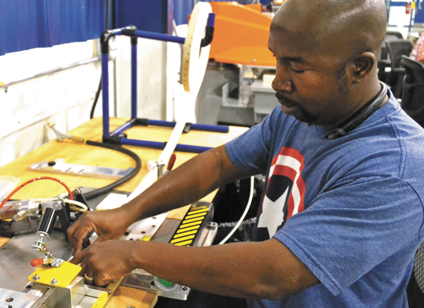
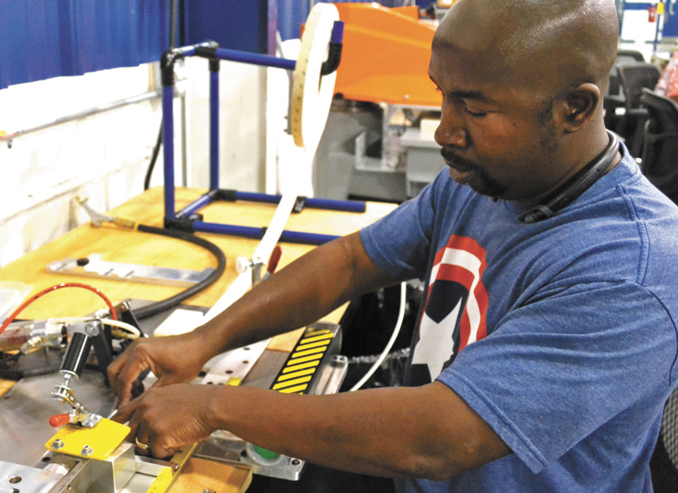
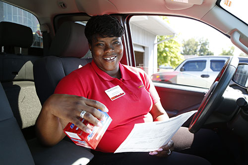
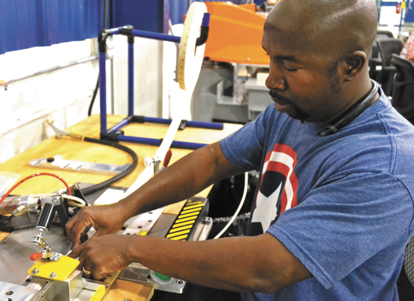
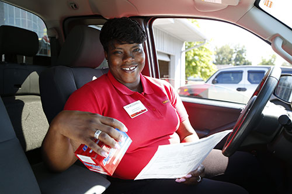

Randy Bueso
As a child, I was helpful around my parent’s house. I would always clean up after myself, help cut the grass, and bring in firewood for the chimney as some examples. By the age of 12, my dad took me to his Auto Mechanic shop for the first time as an apprentice. There, my first tasks were cleaning ratchets, sockets and brooming the place. I remember saying to myself I do not want to do this, I want to be a mechanic already and earn some money. Then my mindset became to do the best that you can do at what you have to do, in order to impress and level up. So that is what I did, when I was 15 I started to do maintenance on vehicles and started to fill up my plate. I started getting paid at 16, and started attending customers as well. At the age of 19, I am a trained mechanic and have started to work independently doing mechanic work and becoming a car salesman. So that’s what I did. I admire my work ethic, I believe it’s one of my best traits.
My incredible work ethic has helped me in several ways, it helped me become co-captain of my FTC robotics team in high school. After being in the team for two years, come captain selection, I knew I;ve studied the position enough for my turn. Once I ran, I got majority votes and won it easily. After that meeting I asked them why they all voted for me, and they said because they’ve seen how hard I’ve worked these past couple of years and how energetic and optimistic I was. I went home that day with a smile on my face because they made me realize how even as a member, how important my influence was on the team.
My best qualities are my work ethic, my optimism, and my will to succeed. Whether I’m on the winning team, or the losing team, the mindset doesn’t change. I’ve developed these qualities through reading books, watching positive films like Spare Parts and McFarland. These types of entertainment influenced my way of thinking, and I feel like the positivity has made me a better person. I believe the 3 key qualities a person must have in order to become successful is patience, respect, and communication. With these 3 qualities, I believe I can become a valuable asset. I treat others the way I would like to be treated, and I look for positivity in all things. I’ve started working and had responsibility at such a young age, that I feel mature for my age, and I am grateful for that. To me, it comes down to three things. Making my Father, Mother and two younger sisters happy and proud,making my supportive friends happy and proud, and making myself happy and proud.
Experience
Mechanic
• Developed understanding of cars
• Experience with programming cars
• Responsible for interacting with customers
Manufacturer
• Took Care of Shipments and Inventory
• Inspected the new materials and parts
• Built fully-fuctional LED Lights and Light Bars
Driver
• Deliver parts to Auto Shops
• Perform maintenance on Delivery Trucks
• Take inventory of Parts in Warehouse
Education
UC Riverside
Portfolio
 


